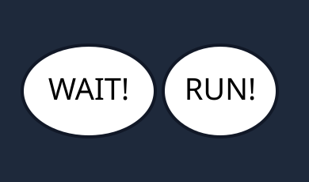
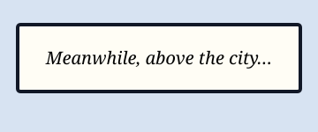
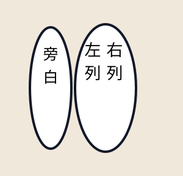

<!doctype html><html lang="zh-CN"><meta charset="utf-8"><title>UMT Font Compatibility Fixtures</title><style>body{margin:0;padding:28px;background:#f8fafc;font-family:system-ui,sans-serif}.grid{display:grid;grid-template-columns:repeat(2,minmax(300px,1fr));gap:20px;max-width:900px;margin:auto}.case{padding:14px;border:1px solid #dbe3ee;border-radius:16px;background:#fff;box-shadow:0 8px 24px #0f172a10}.case b{display:block;margin-bottom:10px;color:#334155}.case img{display:block;width:100%;height:auto;border-radius:10px}</style><main class="grid"><section class="case"><b>衬线多行对白</b></section><section class="case"><b>相邻展示字体对白</b></section><section class="case"><b>矩形旁白</b></section><section class="case"><b>竖排对白</b></section></main></html>
